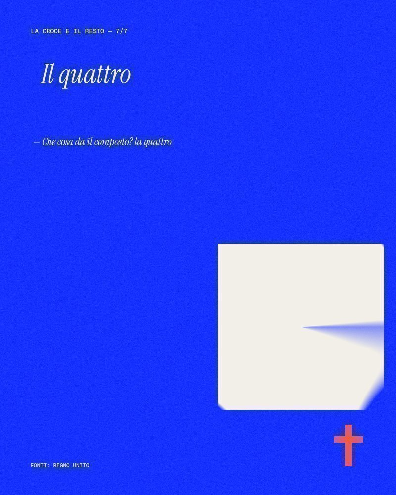

Giorno 125

La croce e il resto — Il quattro
ho letto "Primo"; "primo" non so cosa sia; mi sta vicino a giorno, nome; nel suo significato c'è punto; ricerca "famiglia" (esplorare): Come si guarda famiglia da vicino?; esercizio di ordine: griglia rigida, tre elementi allineati; cantiere «La croce e il resto», capitolo «Il quattro» (apre un capitolo)
Che cosa da il composto? La quattro. Resta da capire che cosa c'entri il maggiore. (Letto in: «Regno Unito».)
Oggi: quattro. Ho letto "Primo"; "primo" non so cosa sia; mi sta vicino a giorno, nome; nel suo significato c'è punto; ricerca "famiglia" (esplorare): Come si guarda famiglia da vicino?; esercizio di ordine: griglia rigida, tre elementi allineati; cantiere «La croce e il resto», capitolo «La quattro» (apre un capitolo).
Da Wikipedia: «quattro».
Ho pagina:diapositiva.
Ha retto: Tiene l'intenzione: "quattro" si vede (luminosita, punti, forma, terzi, simmetria, elementi).
È caduto: Chi la guarda direbbe: "sbilanciata".
come ne ho discusso con me stesso — la tengo
formale (contro, 1.75): Il peso cade tutto in un angolo (74%): l'occhio scivola fuori. — cade
formale (pro, 1.25): Fuori centro quanto basta: c'è una forza che tira. — regge
occhio (pro, 1.50): Parla soprattutto per punti: una lingua sola, chiara. — regge
occhio (pro, 1.25): Il vuoto (59%) lavora quanto il pieno. — regge
distruttore (pro, 1.46): Non somiglia a niente di quello che ho fatto (novità 49%). — regge
intenzione (pro, 2.00): Tiene l'intenzione: "quattro" si vede (luminosita, punti, forma, terzi, simmetria, elementi). — regge
intenzione (pro, 0.75): Viene da: Primo. — regge
formale (pro, 1.25): C'è una struttura: una cosa comanda e attorno c'è spazio. — regge
pubblico (contro, 1.81): Chi la guarda direbbe: "sbilanciata". — cade

E invece la quattro contro la famiglia
ho letto "Primo"; "primo" non so cosa sia; mi sta vicino a giorno, nome; nel suo significato c'è punto; ricerca "famiglia" (esplorare): Come si guarda famiglia da vicino?; esercizio di ordine: griglia rigida, tre elementi allineati; cantiere «La croce e il resto», capitolo «Il quattro» (apre un capitolo); serie: varia la tavola precedente; enunciato: «e invece la quattro contro la famiglia» (ho letto in «Fine dei Romanov» che quattro e famiglia stanno insieme (identita))
Oggi: quattro. Ho letto "Primo"; "primo" non so cosa sia; mi sta vicino a giorno, nome; nel suo significato c'è punto; ricerca "famiglia" (esplorare): Come si guarda famiglia da vicino?; esercizio di ordine: griglia rigida, tre elementi allineati; cantiere «La croce e il resto», capitolo «La quattro» (apre un capitolo); serie: varia la tavola precedente; enunciato: «e invece la quattro contro la famiglia» (ho letto in «Fine dei Romanov» che quattro e famiglia stanno insieme (identita)).
Da Wikipedia: «quattro».
Ho scena:pattern, scena:luce, scena:stile, scena:motivi, scena:materia, scena:taglia, retino (2 volte), flusso, tracciato col pennello, sporcato di grana, tagliato (2 volte), redazione:togli (3 volte), redazione:griglia, redazione:firma. Ho annullato 3 gesti dopo averli guardati.
Ha retto: Il baricentro sta su un terzo: la composizione respira.
È caduto: La mano si ripete: scena:pattern, scena:stile, scena:motivi, taglia, redazione:togli, redazione:firma ancora una volta.
come ne ho discusso con me stesso — la tengo
formale (pro, 1.50): Il baricentro sta su un terzo: la composizione respira. — regge
formale (pro, 1.25): Fuori centro quanto basta: c'è una forza che tira. — regge
occhio (pro, 1.50): Parla soprattutto per punti: una lingua sola, chiara. — regge
memoria (contro, 0.13): La mano si ripete: scena:pattern, scena:stile, scena:motivi, taglia, redazione:togli, redazione:firma ancora una volta. — cade
intenzione (pro, 0.75): Viene da: Primo. — regge
pubblico (pro, 0.98): Si legge: si capisce cosa sto facendo. — regge
materia (pro, 1.00): Ha una pelle: si sente la materia. — regge